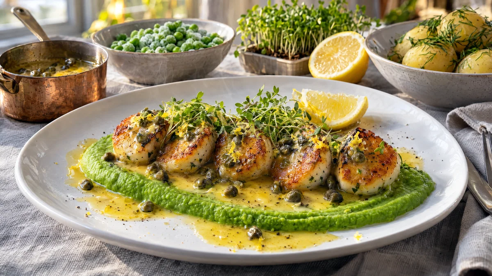

RESTFEST · RECEPTHuvudrätt
Stekta fiskbullar med ärtpuré, citronsmör och krasse
Den mest förlöjligade burken i skafferiet, en påse frysta ärter och en citron. Fiskbullarna halveras och steks gyllene och krispiga i smör, och läggs på en klargrön ärtpuré under ett blankt citronsmör med kapris och en tuss krasse. Ingen kommer att gissa att de kom ur en burk.
- Förberedelse
- 10 min
- Tillagning
- 20 min
- Portioner
- 4
- Nivå
- Nybörjare
 Det här behöver du
Det här behöver du
JÄMFÖRT MED DIN KYL
Tryck på + vid det du behöver köpa.
Ärtpuré
Fiskbullar
Citronsmör
Till servering
Gör så här
- Koka ärterna i vattnet under lock i 3 minuter. Mixa dem slätt med kokvattnet, smör, citronsaft, salt, vitpeppar och mynta med en stavmixer. Håll purén varm.
- Häll av fiskbullarna och dela dem på mitten. Klappa dem riktigt torra med hushållspapper, annars blir de inte krispiga.
- Vänd fiskbullshalvorna i mjölet och knacka av överskottet.
- Hetta upp smör och olja i en stor stekpanna på medelhög värme. Stek fiskbullarna med snittytan nedåt i 3–4 minuter, tills de är djupt gyllene och krispiga. Vänd och stek 1–2 minuter till.
- Smält smöret till citronsmöret i en liten kastrull. Rör ner kapris, citronskal och citronsaft precis före servering.
Dekoration och servering
- Bred ut ärtpurén i en svepande rörelse på varje tallrik med baksidan av en sked.
- Lägg fiskbullarna i en rad på purén, med den gyllene snittytan uppåt.
- Skeda citronsmöret med kaprisen över och runt fiskbullarna.
- Toppa med krasse och servera med citronklyftor och kokt potatis.
- Spara buljongen från burkarna, den är god som bas i fisksoppan i recept 58.
Mått och ugnstemperaturer
Måtten är svenska (dl, msk, tsk, krm). Ugnstemperaturerna gäller vanlig ugn med över- och undervärme; med varmluft, sänk med 20 grader.